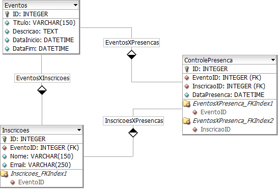

Esse projeto de pesquisa tem como objetivo utilizar a tecnologia Near Field Communication (NFC) para o controle de presenças. Além disso, visa aprofundar os conhecimentos nessa tecnologia emergente que vem sendo adotada em vários dispositivos. Nos últimos anos foram desenvolvidas muitas aplicações utilizando NFC, não apenas para dispositivos móveis, muitas envolvem diversos elementos presentes em nosso cotidiano. Através desse projeto também será possível analisar os campos de aplicação para a tecnologia NFC bem como diversos projetos desenvolvidos nessa área. Como parte do objetivo principal dessa proposta, será possível validar a utilização do NFC para o controle de presenças através de um protótipo desenvolvido especificamente para este fim, utilizando, além do NFC, tecnologias recentes para o desenvolvimento de software.
A cada dia que passa os dispositivos móveis estão mais presentes em nosso cotidiano e tornaram-se praticamente indispensáveis. De acordo com o Data Folha* 43 milhões de brasileiros, com 12 anos ou mais, acessam a internet através de dispositivos móveis, esses resultados foram obtidos através da décima terceira edição da pesquisa F/Radar realizado pela F/Nazca Saatchi & Saatchi* em parceria com o Data Folha, que ouviu 2.236 pessoas em todas as regiões do Brasil. No segundo trimestre de 2013 a venda de smartphones alcançou 57,6% das vendas de dispositivos móveis, passando pela primeira vez a venda de telefones convencionais desde o lançamento dos smartphones*. Com isso diversas soluções surgem para melhorar a interação desses dispositivos com o mundo externo, resolvendo algum problema específico e contribuindo para o meio em que se enquadra.
NFC (Near Field Communication – Comunicação por campo de aproximação) vem sendo utilizado em muitos aplicativos móveis para auxiliar as pessoas em tarefas comuns. Essa tecnologia está presente em diversos dispositivos móveis (como celulares de última geração, por exemplo). Com NFC é possível utilizar apenas a aproximação entre dois dispositivos para que ocorra a troca de informações entre eles. A tecnologia NFC também está presente em outros tipos de equipamentos tais como: cartões, pulseiras, televisões, relógios e qualquer dispositivo que possibilite a utilização do chip NFC.
O objetivo geral é a utilização da tecnologia NFC para o controle de presenças, validando assim a sua capacidade de suprir essa necessidade. Abaixo serão listados os objetivos específicos do projeto de pesquisa:
Nesse projeto será utilizada a Pesquisa Aplicada, pois irá gerar conhecimentos para aplicações práticas de problemas específicos a serem resolvidos pelo projeto proposto. Também será feita uma pesquisa bibliográfica, pois muita informação deve ser relacionada para que a pesquisa seja concretizada com sucesso. Todo material coletado e informações teóricas possuem valor científico muito grande, pois a conclusão de um trabalho de pesquisa que exige o desenvolvimento de um protótipo proposto é muito complexa, dependendo de vários fatores para que possa ser finalizada, por isso a definição dessas metodologias de pesquisa é fundamental no início do desenvolvimento desse projeto.
Modelo proposto (conforme figura acima) é conceitual, como ponto receptor NFC será utilizado um dispositivo móvel. A seguir, cada um desses itens será detalhadamente descrito conforme documentação e desenvolvimento do projeto. Cada uma das etapas do software proposto foi minuciosamente estudada e desenvolvida conforme documentação das tecnologias envolvidas bem como padronização dos recursos utilizados.
Saiba MaisAlgumas premissas devem ser levadas em consideração para elaboração e desenvolvimento do software proposto:
A versão do Sistema Operacional Android deve ser obrigatoriamente 4.4, pois os dispositivos que estavam disponíveis para testes possuem essa versão. Porém os aplicativos devem funcionar a partir da versão 4.1 para os dispositivos móveis que possuírem suporte à tecnologia NFC;
Os aplicativos deverão possuir conectividade irrestrita com a internet, pois os dois aplicativos irão se comunicar com o WebService;
A regra de negócio elaborada para esse projeto não é nada complexa, visto que utilizaremos apenas o necessário de informações para conseguir controlar presença conforme proposta.
Será possível manter um cadastro simples de eventos, para o projeto foram propostos apenas quatro campos informativos: Identificador Único do Evento, Título do Evento, Descrição do Evento, Data Inicial do Evento e Data Final do Evento;
O projeto propôs também um controle efetivo de inscrições para os eventos cadastrados, apenas as informações básicas do inscrito são necessárias para o projeto proposto: Identificador Único do Inscrito, Nome Completo do Inscrito, E- mail do Inscrito e Evento relacionado. Não será permitido o cadastro de e-mails repetidos para os eventos, ou seja, cada inscrito deve ser único com relação ao e-mail cadastrado no evento.
O controle efetivo da presença do inscrito em determinado evento acontecerá como resultado do relacionamento entre o inscrito e o evento, para o projeto serão armazenados dados básicos para controle bem como: Identificador Único da Inscrição, Identificador único do Evento e Data da Presença. Não será possível registrar mais de uma presença para cada inscrito por evento, a presença tem caráter único e exclusivo;
O projeto visa ser desenvolvido de forma modular, logo toda a regra de negócio será centralizada e controlada por um único módulo, o Webservice. O Webservice proposto será responsável por armazenar todas as regras de negócio necessárias (conforme descritas no item anterior), fazendo com que a lógica do software fique centralizada em um único ponto, não levando nenhuma condição para os outros módulos propostos. Toda a comunicação do Webservice com os demais módulos se dará através do formato de mensagens JSON.
Esse projeto de Webservice foi estruturado utilizando a tecnologia WCF que significa Windows Communication Foundation, essa tecnologia serve para criação de modos de comunicação entre serviços distintos. Ela está presente no framework de desenvolvimento de aplicações da Microsoft denominado .NET Framework. Para o desenvolvimento dessa aplicação, a linguagem de programação adotada foi o C# (C Sharp), essa linguagem de programação também está disponível não framework especificado acima.
As informações dos Eventos, Inscritos e Controle de Presença deverão ser persistidos em banco de dados para posterior consulta e também para auxiliar na validação dos mesmos. Como produto de banco de dados relacional utilizaremos a distribuição Microsoft SQL Server. O produto escolhido para armazenamento de dados não é obrigatoriedade para desenvolvimento do projeto, na verdade é apenas uma questão de ambiente, qualquer base de dados relacional disponível no mercado poderia ser utilizada.

Esse modelo básico estrutural do banco de dados foi necessário para manter as informações do projeto, embora seja extremamente simples, o mais importante desse modelo é a maneira como as entidades se relacionam. Para o efetivo controle de presenças, objetivo principal do projeto de pesquisa, são necessárias apenas três entidades: Eventos, Inscrições e Controle de Presença. Conforme foi explicado no detalhamento da regra de negócio, cada uma dessas entidades tem a função de armazenar as informações necessárias.
No caso de um projeto a ser desenvolvido exclusivamente para o mercado, provavelmente seriam necessárias mais informações e também mais entidades, porém para esse projeto de pesquisa, apenas essas três entidades são o suficiente. O objetivo nessa questão é apenas armazenar de forma estruturada os dados para consultas posteriores.
A proposta prevê o desenvolvimento de um aplicativo nativo para a plataforma Android que servirá como o cartão de acesso para o controle efetivo de presença, ou seja, esse aplicativo estará com o usuário que está previamente cadastrado em determinado evento, e em uma situação hipotética de caso de uso, estará prestes a chegar nesse evento. Sendo assim esse usuário encostará seu dispositivo no ponto receptor e esse aplicativo irá fornecer as informações necessárias para acesso. Essa é a definição simbólica da utilização do aplicativo.
A plataforma utilizada para o desenvolvimento do aplicativo foi o Android Studio, e como linguagem de programação nativa do sistema operacional Android, a linguagem Java. Essas definições técnicas relacionadas com o desenvolvimento também valem para o aplicativo receptor. A referência utilizada no início do desenvolvimento foi o livro Beginning NFC: Near Field Communication with Arduino, Android, and PhoneGap, muitas questões com relação ao desenvolvimento com NFC foram esclarecidas com esse livro, todas relacionadas com a prática do desenvolvimento, não tem relação teórica com o projeto de pesquisa.
Maiores informações sobre o desenvolvimento do aplicativo estão na wiki do repositório.
As ferramentas utilizadas para o desenvolvimento do aplicativo receptor foram exatamente as mesmas que foram utilizadas para o desenvolvimento do aplicativo cliente. O aplicativo receptor não possui interface gráfica, possui apenas uma tela padrão que emite uma mensagem confirmando ou não a presença do indivíduo.
Sempre que uma nova tag for descoberta pelo NFC, esse método é chamado automaticamente, pois aqui está a relação com os filtros definidos nas configurações do aplicativo. Mesmo o método tratando a informação como tag, como o padrão definido é para HCE, se for aproximado uma tag NFC padrão não irá funcionar, essa nomenclatura serve apenas para padronizar o código.
Maiores informações sobre o desenvolvimento do aplicativo estão na wiki do repositório.